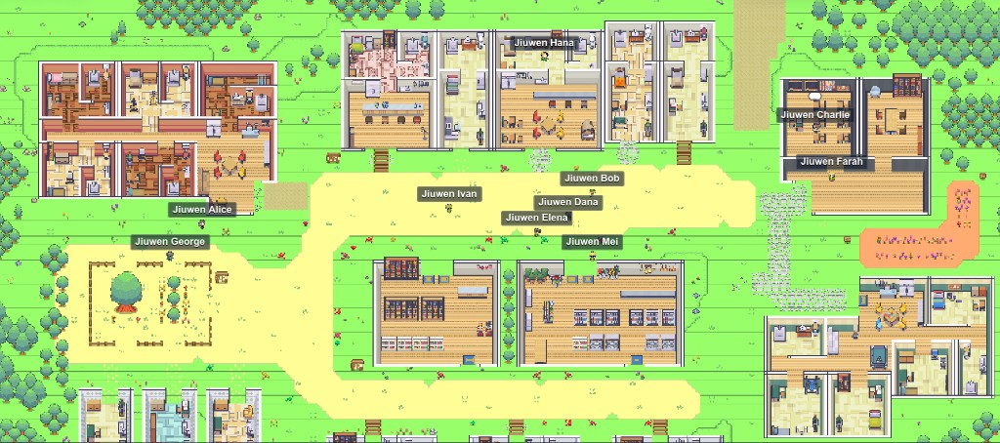

Scenario
Sunny Tuesday morning, 18 C, light breeze. The town is a slice-of-life baseline, not a quest script.
Daily-life baseline
A late-spring weekday morning with 10 residents who know each other but do not live in each other's pockets.

Sunny Tuesday morning, 18 C, light breeze. The town is a slice-of-life baseline, not a quest script.
10 locations, 65 location-scoped interactions, and 10 residents with routines, relationships, worries, secrets, and goals.
Repository path
agentsociety/quick_experiments/hypothesis_god_town/experiment_1/